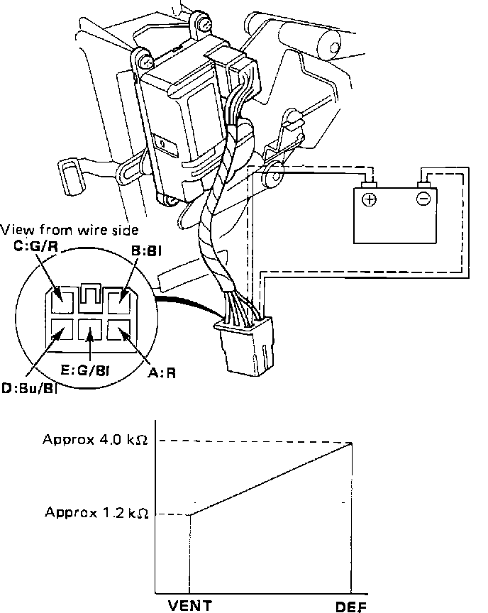

Function Control Motor
Function Control Motor Testing:

1. Measure resistance between terminals G/R and G/BI. It should read approximately 4K ohms.
2. Check motor operation by connecting battery positive to terminal R and negative to terminal BI.
3. Reverse connections to make sure motor will run in both directions.
CAUTION: To prevent motor damage, disconnect battery as soon as motor starts.
4. Connect battery positive to terminal R and negative to terminal BI. Measure resistance between terminals G/R and Bu/BI. Motor is okay if readings agree with those shown on image table.
5. Check resistances again with battery polarity reversed.